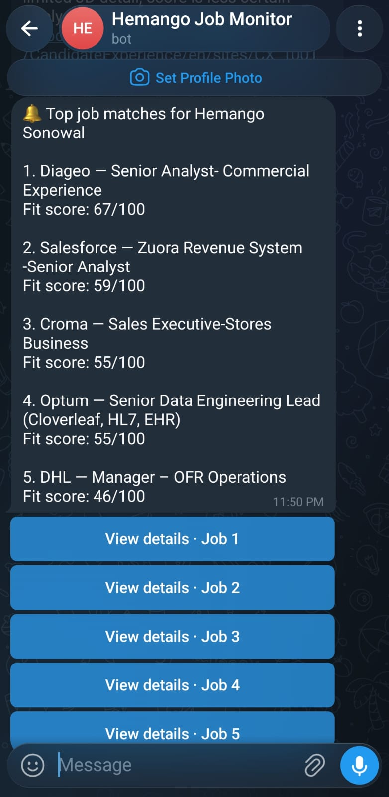
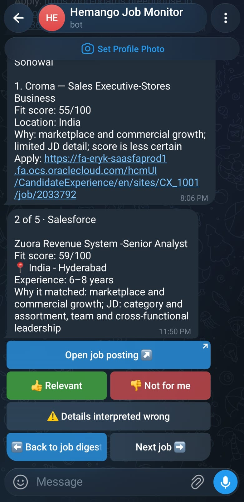
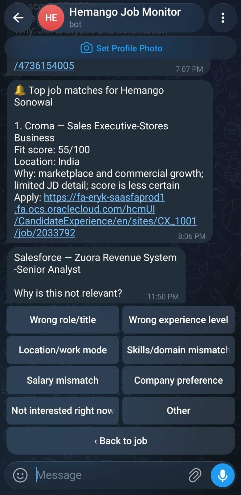

91/100
01
Category Strategy Lead
Aurora Retail · Bengaluru · Hybrid
Case study · Automation · 2026
I built a multi-source discovery system that checks public career platforms, scores opportunities independently for multiple profiles, and turns Telegram alerts into a structured feedback loop—automatically.
Ranked from 28 newly discovered postings.
Aurora Retail · Bengaluru · Hybrid
The problem
The challenge was not finding more jobs. It was finding the right ones early, without repeatedly checking dozens of fragmented career sites.
Companies publish through many applicant-tracking systems, each with different data shapes, pagination and timestamps.
Keyword alerts often ignore seniority, function, location and negative signals—creating a queue that still needs manual filtering.
A relevant role is more useful when discovered shortly after publication, not days later on a general-purpose aggregator.
The system
One dependable loop
The pipeline separates scheduling, collection, decisioning and delivery. Each stage can fail visibly without corrupting the others.
Approved résumé-derived role, capability and location profiles
Versioned in SupabaseDispatches the workflow on a controlled hourly schedule
Cron WorkerRuns tests, adapters and the Python monitoring workflow
Ephemeral computeATS APIs, structured career pages and labelled alerts
Read-only accessScores the shared catalogue independently for each approved profile
Isolated 0–100 rankingsPersists jobs, scores and deliveries; sends each user a ranked digest
Feedback-aware deliveryNo private recruiter systems or employer credentials.
One shared catalogue, with independent scores, history and Telegram delivery.
Source coverage distinguishes no jobs from broken sources.
Product evolution
From alert to learning loop
Adding a second profile exposed the real product problem: collection could be shared, but relevance, delivery history and feedback had to remain personal.
Piyush's résumé was converted into a separate approved scoring profile. The same new jobs are now evaluated against both profiles, ranked independently and delivered to each person's own Telegram chat.
Profiles are versioned and approved before they can participate in delivery.
A compact top-five digest opens job details inside the same Telegram message. Users can open the posting, move between jobs, mark a match as relevant, reject it with a structured reason, or report that the job details were interpreted incorrectly.
Message editing keeps the interaction compact instead of creating a stream of bot messages.
Live product UI
Each button is tied to the correct delivery, profile, Telegram user and message. The application link is the only action that leaves Telegram; every other action updates the existing message and writes structured context to the backend.



Durable learning data
Jobs are stored once, while scores, channels, deliveries and feedback remain user-specific. Each response retains the delivered score and a job snapshot, so later analysis reflects what the user actually saw—even if the source posting changes or expires.
Current boundary: feedback is collected for analysis but does not silently change ranking weights yet.
Key decisions
Decision 01
A role receives an explainable score from five dimensions. Hard filters remove clear mismatches first; missing description data lowers confidence rather than automatically rejecting the role.
The score is a ranking heuristic—not a prediction of receiving an interview.
Decision 02
GitHub Actions was a good execution environment, but its native scheduled trigger was not dependable enough for this workflow. The fix was architectural, not cosmetic.
Cloudflare decides when. GitHub Actions decides how.
Decision 03
A seven-day baseline seeds the job ledger without notifications. Later runs compare stable source identifiers, append unseen roles and alert only on genuinely new, recent matches.
Populate recent inventory silently
Fetch and compare current postings
Send up to five useful results
Decision 04 · Challenge
Gemini and Groq were integrated in a read-only shadow path to compare LLM-derived evidence against the deterministic Python score. The experiment did not graduate to production: free-tier hourly and daily limits made consistent scheduled evaluation impractical.
No LLM result changes live ranking, persistence or Telegram delivery.
What changed
The result is less time spent checking and more time evaluating the opportunities that deserve attention.
Reflections
Started in a weekend
The biggest lesson was that collecting data is the easy part. A useful system must also understand ambiguity, preserve state, explain its decisions and make failures obvious.
Every source names locations, dates and identifiers differently. Converting them early kept the scoring and output layers simple.
A common job catalogue prevents duplicate crawling; profiles, rankings, channels and feedback stay user-specific.
A thumbs-down alone is weak data. Reason codes, delivery-time scores and job snapshots make later calibration possible.
Gemini and Groq were useful experiments, but free-tier quotas were too variable for the hourly critical path. Safe fallback mattered more than novelty.
Codex helped explore unfamiliar systems, implement adapters and tighten tests; product judgment still determined the rules and trade-offs.